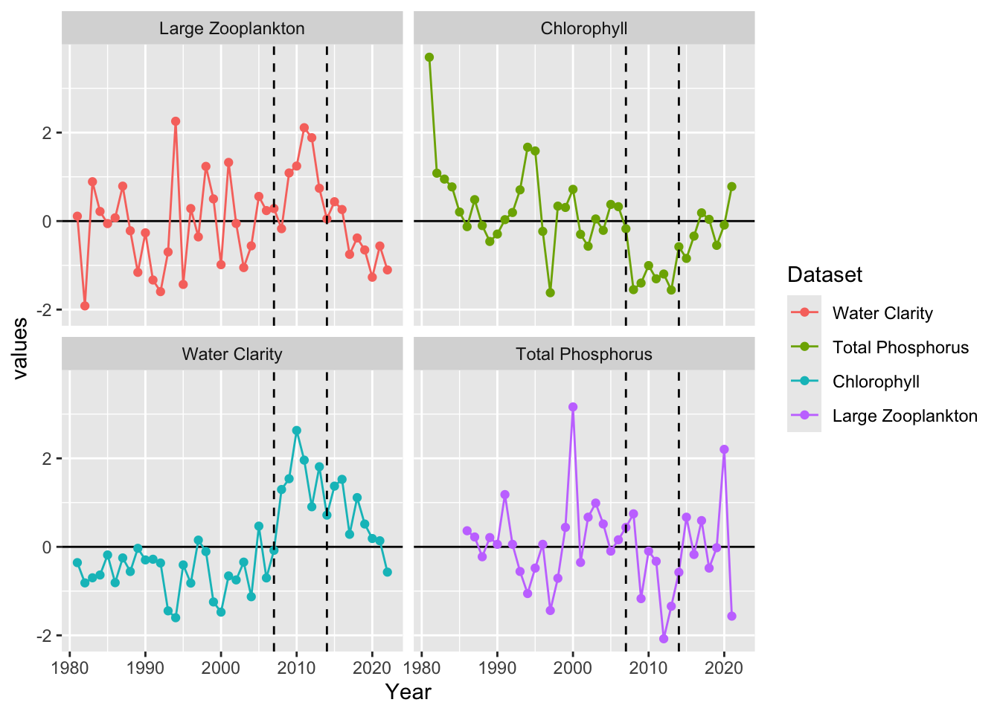
NTL_LTER_TR Case Study
Approach for running LTER-NTL Trout Lake data using temporally structured GAMs and linear regression models with time periods defined a-priori.
First we start with looking at three time periods using linear regression models: 1. The historical regime with low water clarity 2. A clear water regime where the introduction of Lake Trout into the system from stocking in 2006. 3. A novel regime following the introduction of invasive, predatory water flea (Bythotrephes) in 2014 which lead to a reversion of water clarity to a less clear state.
To examine this we start by looking at a few key food web conditions using intercept only models through time: 1. Water clarity 2. Phosphorus - which impacts water clarity and is a common bottom-up process that could impact water clarity and we examine as an alternative hypothesis to the top down processes of Lake Trout and invasive speceis. 3. Abundance of large zooplankton Daphnia and Calanoids 4. Chlorophyll
We approach this by fitting a linear model with the a priori time periods as a factor and compare AIC to a single intercept model for wach variable.
We find that water clarity, chlorophyll, and large zooplankton abundance are all better explained by a model that includes apriori defined time periods improves model fit.
| Variable | No.Period.AIC | Period.AIC | Best.Model |
|---|---|---|---|
| Water Clarity | 122.18 | 83.43 | Period |
| Total Phosphorus | 105.15 | 105.79 | No difference |
| Chlorophyll | 119.34 | 106.87 | Period |
| Large Zooplankton | 122.18 | 115.84 | Period |
We have identified time-varying mean abundance or amount. We see that the relationship between large zooplankton and water clarity, and large zooplankton and chlorophyll, appears to be time-varying. Next we consider whether there are changing relationships between water clarity and these ecosystem dynamics by including a slope parameter and its interaction with time period.
| Covariates | Period | Interaction |
|---|---|---|
| Chlorophyll | 36.31 | 33.18 |
| Total Phosphorus | 39.34 | 43.14 |
| Large Zooplankton | 43.58 | 35.99 |
Both Chlorophyll and Large Zooplankton best explain water clarity with a time varying relationship. We examine how these relationships change through time.
[1] "Chlorophyll"| term | Estimate | Std. Error | t value | Pr(>|t|) |
|---|---|---|---|---|
| (Intercept) | 4.8349816 | 0.2361234 | 20.476500 | 0.0000000 |
| mean_chl | -0.0782362 | 0.0736806 | -1.061829 | 0.2955856 |
| as.factor(period)2 | 2.2005743 | 0.5403339 | 4.072619 | 0.0002529 |
| as.factor(period)3 | 1.7845049 | 0.7697864 | 2.318182 | 0.0264058 |
| mean_chl:as.factor(period)2 | -0.6484809 | 0.2837985 | -2.285005 | 0.0284855 |
| mean_chl:as.factor(period)3 | -0.3825131 | 0.2841483 | -1.346174 | 0.1869010 |
[1] "Zooplankton"| term | Estimate | Std. Error | t value | Pr(>|t|) |
|---|---|---|---|---|
| (Intercept) | 4.6974936 | 0.1973695 | 23.8005078 | 0.0000000 |
| Large | -0.0440188 | 0.0789582 | -0.5574951 | 0.5806395 |
| as.factor(period)2 | 0.0552649 | 0.6211177 | 0.0889765 | 0.9295938 |
| as.factor(period)3 | -0.8929801 | 0.5510514 | -1.6205024 | 0.1138523 |
| Large:as.factor(period)2 | 0.3623181 | 0.1945706 | 1.8621421 | 0.0707613 |
| Large:as.factor(period)3 | 0.7863286 | 0.2594449 | 3.0308115 | 0.0044983 |
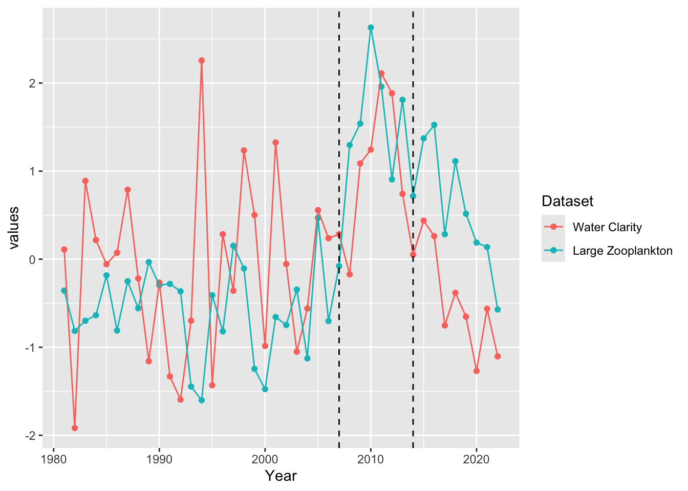
`geom_smooth()` using formula = 'y ~ x'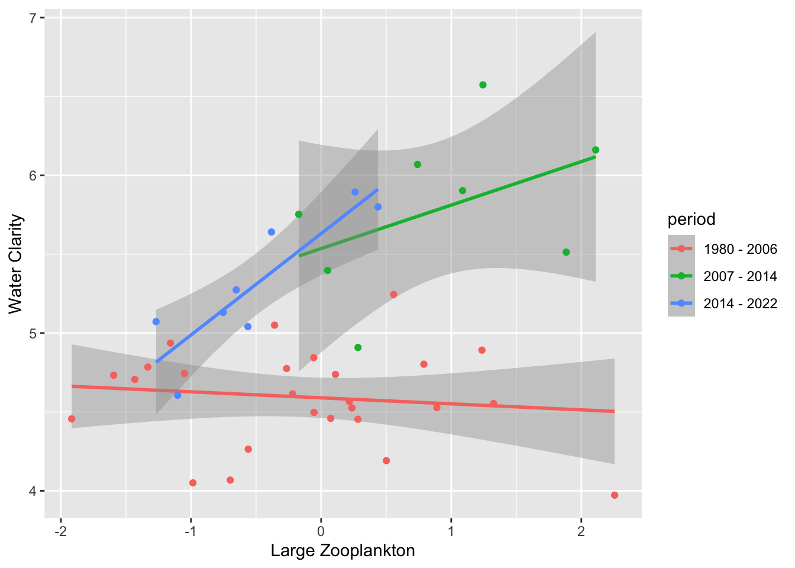
Warning: Removed 1 row containing missing values or values outside the scale range
(`geom_point()`).Warning: Removed 1 row containing missing values or values outside the scale range
(`geom_line()`).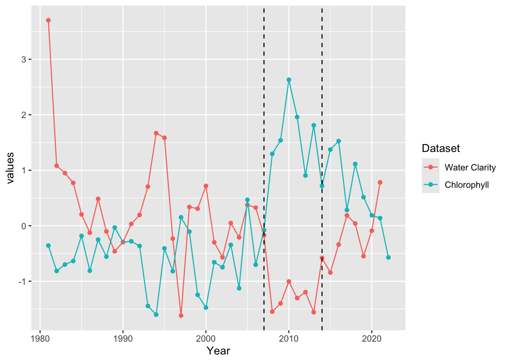
`geom_smooth()` using formula = 'y ~ x'Warning: Removed 1 row containing non-finite outside the scale range
(`stat_smooth()`).Warning: Removed 1 row containing missing values or values outside the scale range
(`geom_point()`).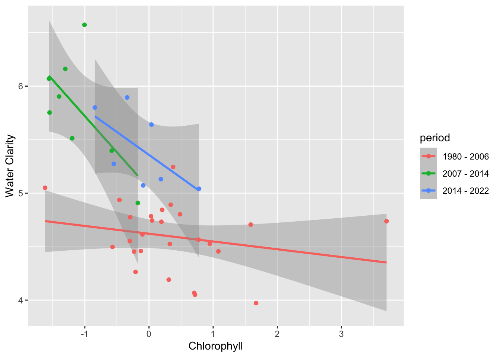
If we take the Zooplankton-water quality relationship and fit a temporally structured gam and compare it to the linear model, we find similar results. Both predictions also acccurately identify 2006 as a breakpoint and a second break point in 2016.
#| echo: false
prediction=data.frame(prediction=predict(zoop_slope_int,interval='confidence'),year=unique(analysis_long$year4))
ggplot(data=prediction,aes(y=prediction.fit, x=year)) +
#facet_wrap(~area1,scales="free_y") +
# geom_point()+
geom_point(data=analysis_long%>%
filter(Dataset=="mean_sec"), aes(y=values, x=year4, group=Dataset, col=Dataset))+
geom_line()+
ggtitle('Linear Model')+
geom_vline(xintercept=2007, lty=2)+
geom_vline(xintercept=2014, lty=2)+
guides(shape = FALSE)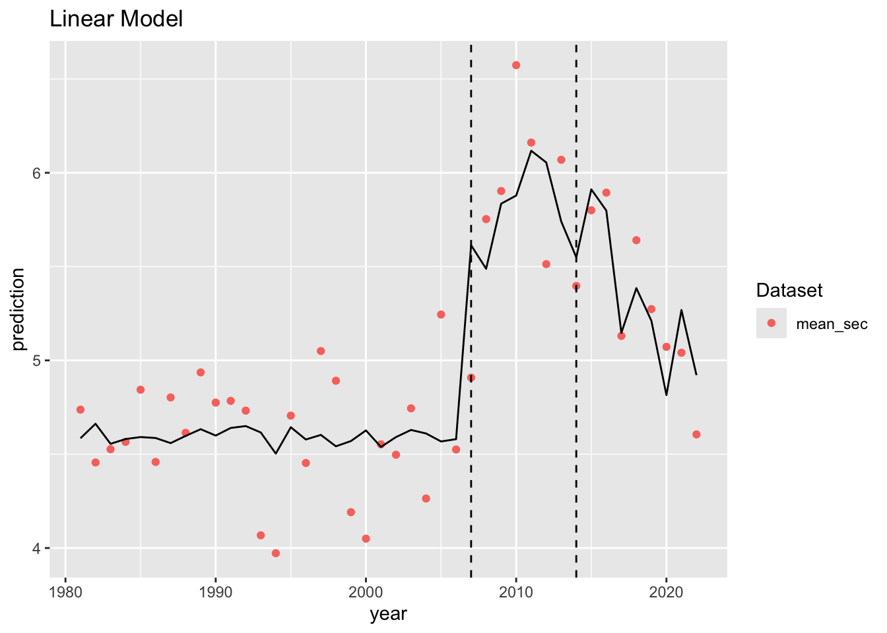
y.ts <- ts(data=prediction, frequency=1)
# fit breakpoint model
bp.y <- breakpoints(y.ts ~ 1)
summary(bp.y)
Optimal (m+1)-segment partition:
Call:
breakpoints.formula(formula = y.ts ~ 1)
Breakpoints at observation number:
m = 1 26
m = 2 26 36
m = 3 13 26 36
m = 4 7 13 26 36
m = 5 7 13 19 26 36
Corresponding to breakdates:
m = 1 26
m = 2 26 36
m = 3 13 26 36
m = 4 7 13 26 36
m = 5 7 13 19 26 36
Fit:
m 0 1 2 3 4 5
RSS 11.3356 2.3579 0.6534 0.6505 0.6468 0.6457
BIC 71.6581 13.1864 -33.2407 -25.9477 -18.7148 -11.3127prediction[26,] prediction.fit prediction.lwr prediction.upr year
26 4.580172 4.436148 4.724196 2006prediction[36,] prediction.fit prediction.lwr prediction.upr year
36 5.798336 5.386912 6.209761 2016gam1<-gam(mean_sec~s(year4, by=Large,k=10), data=full_data)
#plot(gam1)
gam2<-gam(mean_sec~s(year4,k=10), data=full_data)
gam3<-gam(mean_sec~s(Large,k=10), data=full_data)
prediction2=data.frame(prediction=predict(gam1, se.fit=TRUE),year=unique(analysis_long$year4))
ggplot(data=prediction2,aes(y=prediction.fit, x=year)) +
#facet_wrap(~area1,scales="free_y") +
#geom_point()+
geom_line()+
geom_point(data=analysis_long%>%
filter(Dataset=="mean_sec"), aes(y=values, x=year4, group=Dataset, col=Dataset))+
ggtitle('GAM')+
geom_vline(xintercept=2007, lty=2)+
geom_vline(xintercept=2014, lty=2)+
guides(shape = FALSE)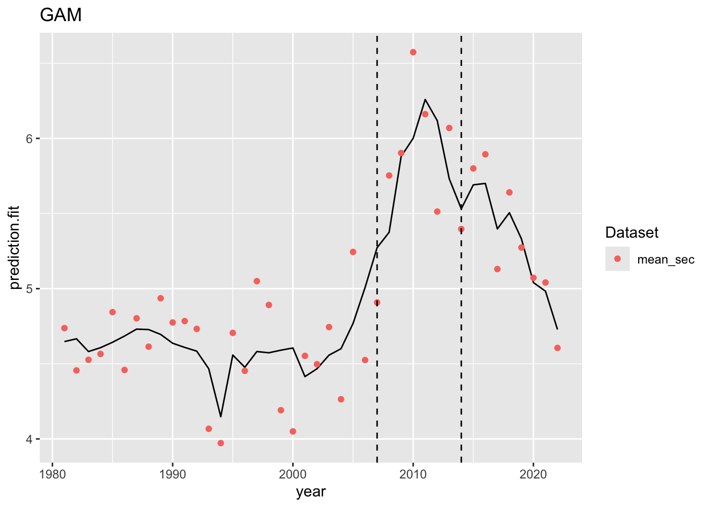
y.ts <- ts(data=prediction2, frequency=1)
# fit breakpoint model
bp.y <- breakpoints(y.ts ~ 1)
summary(bp.y)
Optimal (m+1)-segment partition:
Call:
breakpoints.formula(formula = y.ts ~ 1)
Breakpoints at observation number:
m = 1 26
m = 2 26 36
m = 3 22 28 36
m = 4 12 22 28 36
m = 5 6 12 22 28 36
Corresponding to breakdates:
m = 1 26
m = 2 26 36
m = 3 22 28 36
m = 4 12 22 28 36
m = 5 6 12 22 28 36
Fit:
m 0 1 2 3 4 5
RSS 11.814 3.194 1.882 1.798 1.653 1.651
BIC 73.393 25.936 11.201 16.747 20.693 28.119prediction2[26,] prediction.fit prediction.se.fit year
26 5.007736 0.141099 2006prediction2[36,] prediction.fit prediction.se.fit year
36 5.700338 0.1581282 2016Looking at a 10 year rolling window where the first and last year of the time series changes and see what the slop estimate is as a function of those? Maybe also do a 5-year and a 15-year to also show a function of time series length?
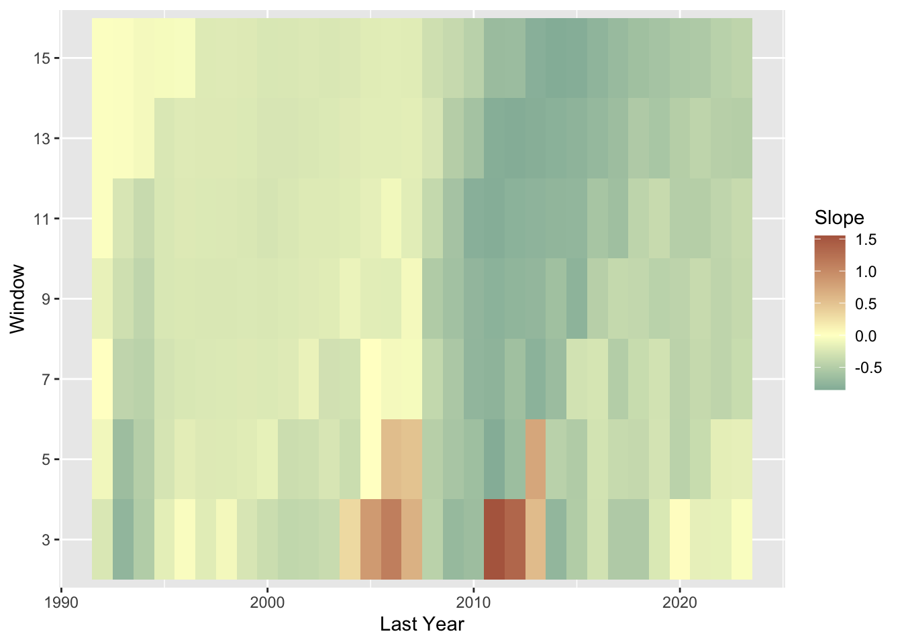
Looking at GAMs for Chlorophyll
Same process with Zooplankton

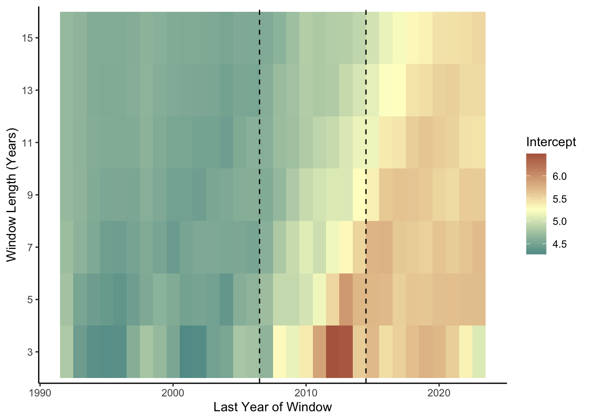
Now that we have looked at both the LM and GAM, lets generate a plot of them together:
Family: gaussian
Link function: identity
Formula:
mean_sec ~ s(year4, by = Large, k = 10)
Parametric coefficients:
Estimate Std. Error t value Pr(>|t|)
(Intercept) 4.688 0.184 25.47 <2e-16 ***
---
Signif. codes: 0 '***' 0.001 '**' 0.01 '*' 0.05 '.' 0.1 ' ' 1
Approximate significance of smooth terms:
edf Ref.df F p-value
s(year4):Large 9.18 9.815 11.96 <2e-16 ***
---
Signif. codes: 0 '***' 0.001 '**' 0.01 '*' 0.05 '.' 0.1 ' ' 1
R-sq.(adj) = 0.734 Deviance explained = 79.3%
GCV = 0.13274 Scale est. = 0.10056 n = 42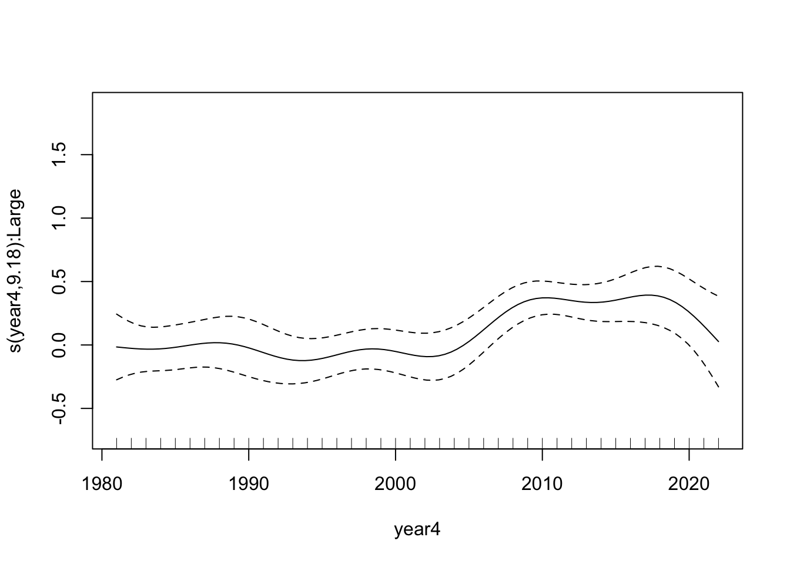
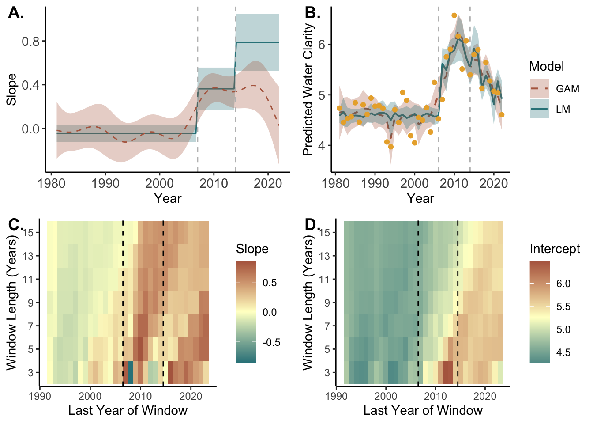